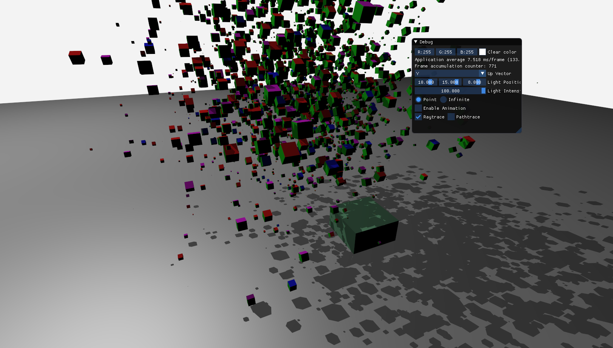
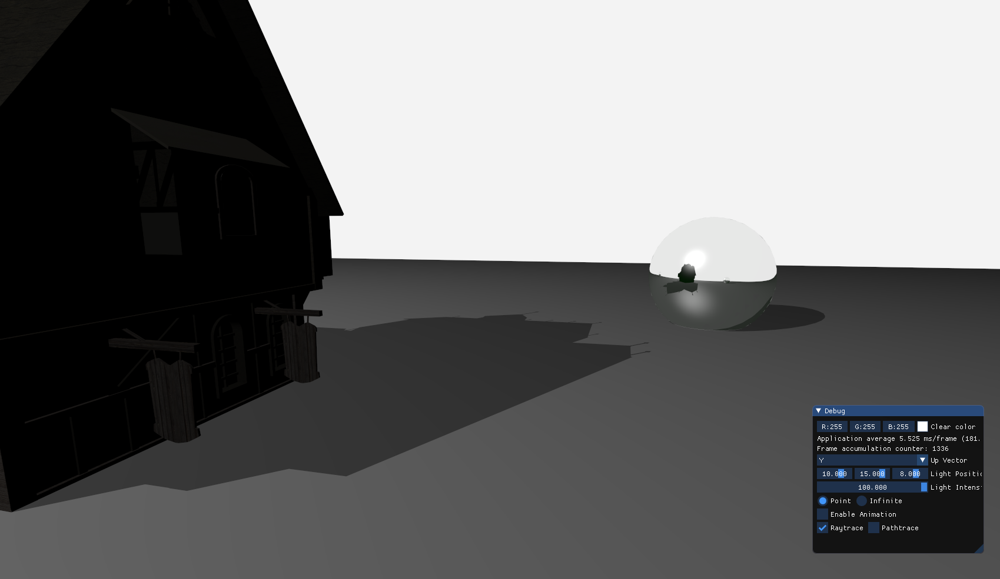
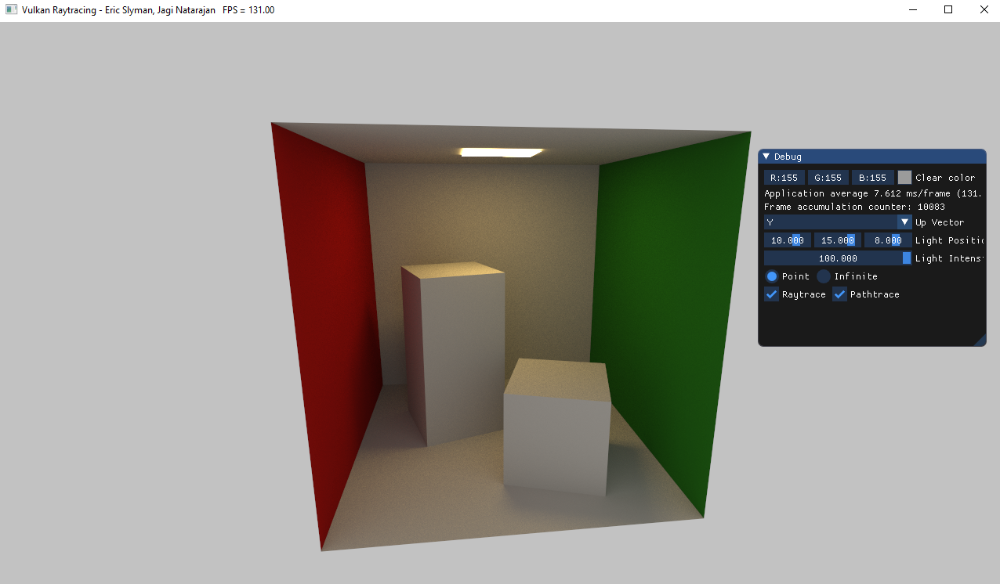
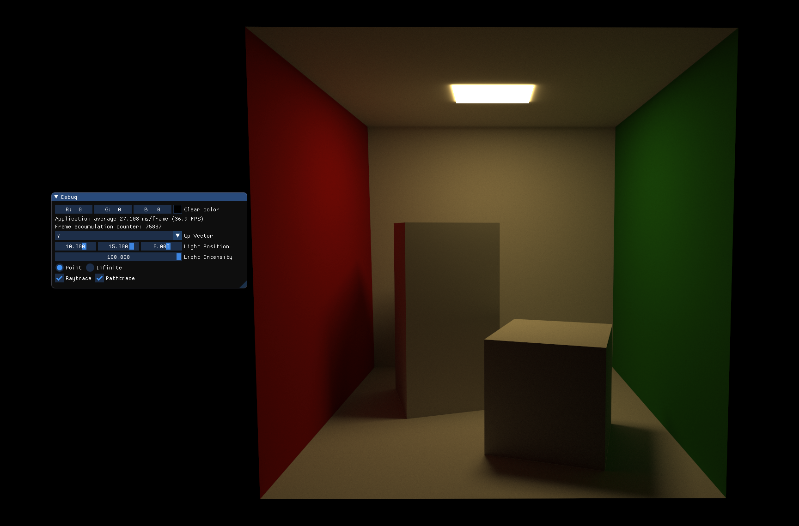
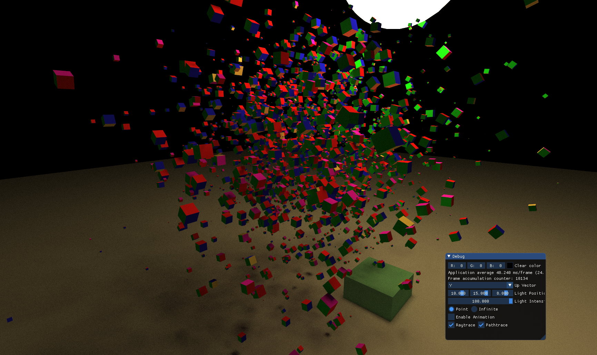
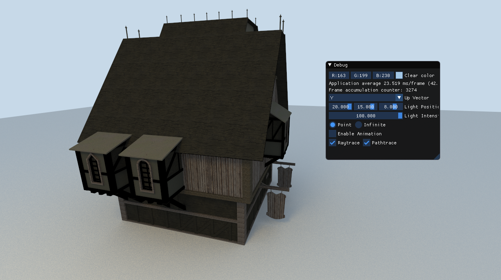

Implementation of ray tracing in both C++ with Vulkan backend and Javascript with WebGL backend with several additional extensions.
Requirements
VK_NV_ray_trace extension (>= GTX 1060)The VKExamples.sln solution within the vk_raytrace folder contains our extended VKExample1 project. Assuming the above requirements are satisfied, the solution should build and launch the vulkan window successfully. A debug panel allows for control of some of the scene properties, and on-the-fly toggling between using raytracing and the original object-order renderer that the example project contained.
It is necessary to run a simple web server to get this project working due to loading external shaders. Navigate to the Web directory and run python3 -m http.server, then point your browser to localhost:8000. You should see a lambertian-shaded sphere, smoothly alternating between two colors. As you move the mouse around the canvas, the direction of the point light should change as well.
We started with the VKExample1 project which implements the basic rasterization pipeline, and extended it to support raytracing following this tutorial. We added boilerplate code to hello_vulkan.cpp, to support configuring and using the raytracing pipeline instead. The main.cpp file calls into hello_vulkan.cpp to set up the pipeline, then sets up the scene by loading models and instances, and then runs a render loop, sampling user input, updating uniforms and instances, and calling either the rasterize() or raytrace() function. The raytracing pipeline consists of several GLSL shaders that correspond to specific pipeline stages, located in the shaders subfolder.
The raytrace.rgen ray generation shader runs on every fragment, akin to a fragment shader, and generates a ray for each fragment from the camera matrices. The shader then calls the traceNV() raytrace function, and stores the resulting color into the image buffer. This shader also implements a jittering feature - if the scene experiences no changes, the emanating rays are jittered by a random amount, and the resulting color value is averaged into the existing image. This feature is what allows for path tracing that progressively gets better over time, as more random rays are sampled leading to a more accurate monte-carlo approximation. Our debug GUI shows the number of frames that have been accumulated into the image on the screen.
The raytrace.rchit is the closest-hit shader that implements blinn-phong lighting, reflections, and transparency, in a similar manner to Assignment 2. The wavefront.glsl shader, which contains structures for data from OBJ file materials, helpfully performs a lot of the lighting work for us. The closest-hit shader also casts out shadow rays, which use a minimal boolean ray payload with a custom miss shader, raytraceShadow.rmiss, used to figure out if a point or directional light is occluded. If the closest-hit shader can’t be invoked because a ray hit no geometry, the raytrace.rmiss shader is invoked, which simply returns the attenuated clear color.
The pathtrace.rchit shader contains a monte-carlo path tracing implementation, supporting only diffuse materials. When a pixel ray collides with an object, a random ray is picked uniformly from the hemisphere oriented with the hit location’s normal vector, and traced into the scene again, propagating light back into the pixel ray. The monte-carlo aspect of this process happens automatically, due to the jitter averaging functionality in raytrace.rgen.
The skeleton for this code is a modified version of A3 with all logic pulled out to centralized sources. index.html can display a canvas for each task where the function setupTask("ray-1", Ray1, true) connects the canvas with id ray-1 to the javascript function Ray1 in the file ray1.js. The task file Ray1.js handles the setup prior to glsl. Mostly, this is loading the necessary parameters into buffers for the glsl. The glsl code has been pulled into shader files under webgl_raytrace/shaders/. Note that the vertex shader has very little code in it, as we want to run our program for each pixel when ray tracing. The main ray tracing code can all be found in webgl_raytrace/shaders/fragment.glsl.
    